Terçahoje
Caipirinha em dobro
Das 18h às 20h, a segunda caipirinha de limão-cravo sai por conta da casa.
Reservar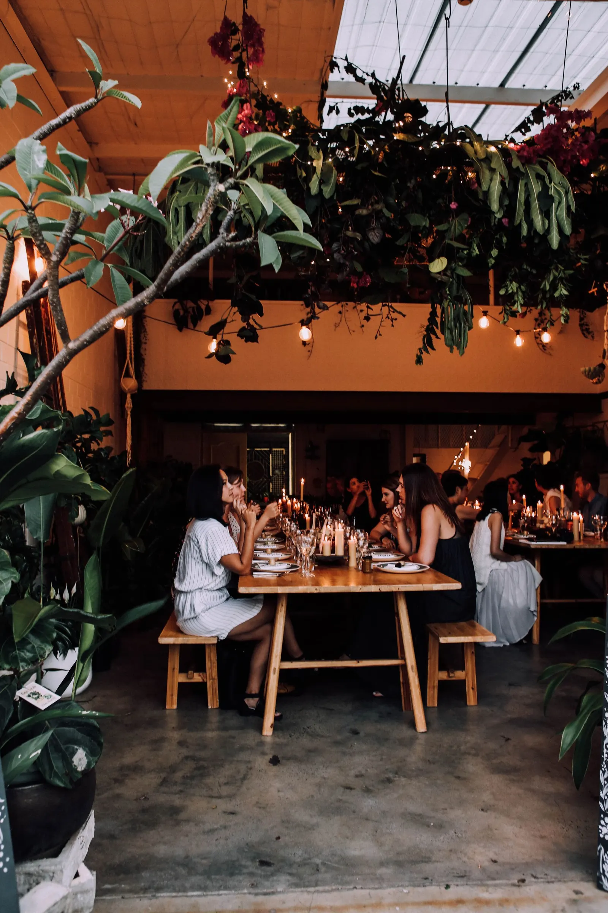
Ter a qui, 11h30 às 15h e 18h à meia-noite. Sex, 11h30 às 15h e 18h às 1h. Sáb, 11h30 às 1h. Dom, 11h30 às 18h
Bem-vindo ao Taioba
Bar e cozinha mineira em Santa Tereza, Belo Horizonte. Arroz, feijão, farofa, mandioca e batata para dividir, carnes na brasa e caipirinha de limão-cravo, numa varanda cheia de planta.
4,82.340 avaliações no Google
Terçahoje
Das 18h às 20h, a segunda caipirinha de limão-cravo sai por conta da casa.
Reservar
Quartahoje
A costela que passou a noite na brasa, servida à parte com mandioca frita.
Reservar
Sextahoje
No happy hour até as 20h, pediu mandioca ou batata, vem em dobro.
Reservar
Sábadohoje
Feijão tropeiro com torresmo, couve e ovo, em porção para dividir.
Reservar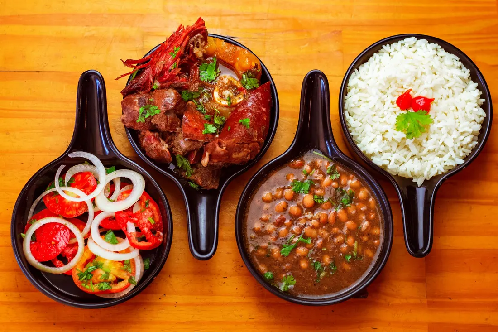
Domingohoje
Mesa mineira completa com carnes, porções e sobremesa. Criança até 10 anos paga metade.
Reservar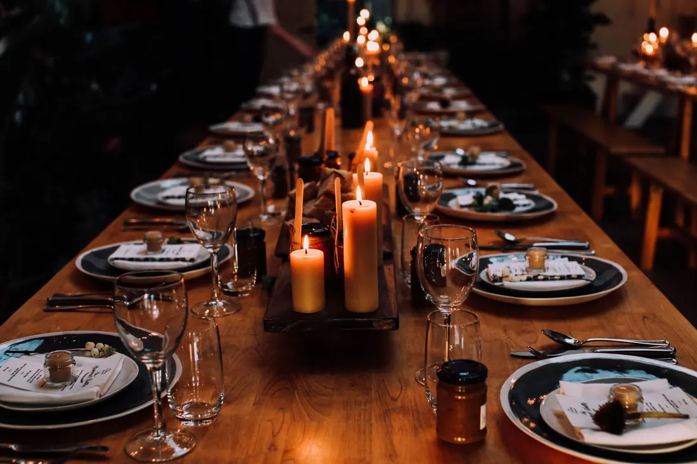

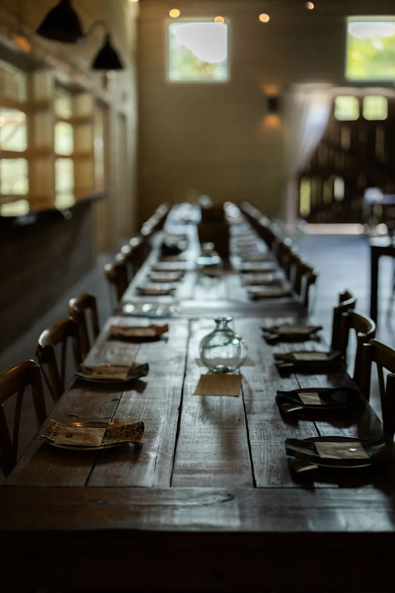
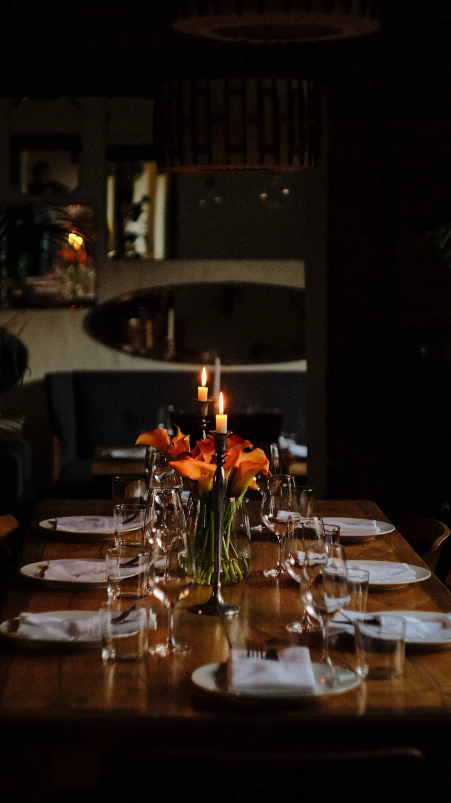
Aniversários, confraternizações de empresa e casamentos pequenos, de 25 a 80 pessoas, com porções sem parar, carnes na brasa e drinks da casa.
A casa
O Taioba nasceu no bairro mais boêmio de Belo Horizonte, num sobrado com varanda para a horta. A ideia sempre foi simples: a mesa inteira dividindo panelinha de arroz, feijão e farofa, a carne chegando à parte na tábua e um drink gelado do lado.
A mandioca é frita só depois do pedido, a farinha da farofa é torrada toda manhã e a costela passa doze horas na brasa. As caipirinhas usam o limão-cravo que nasce no pé da varanda.
12anos servindo porção em Santa Tereza
16porções e acompanhamentos no cardápio
20cachaças de alambique na carta
7carnes servidas à parte

Carnes servidas à parte e porções de arroz, feijão, farofa, mandioca e batata para a mesa montar do seu jeito. Para beber, caipirinhas de limão-cravo e drinks com cachaça de alambique.
Ver cardápio completoCardápio completo
Escolha a carne, que vem à parte, e as porções para acompanhar. Cada panelinha serve duas pessoas com folga. O tempo é o de preparo depois do pedido.
As carnes vêm sozinhas na tábua, com vinagrete e molho da casa. Você escolhe as porções para acompanhar.
6 opções500 gda casa
Selada na grelha sobre a brasa e fatiada na tábua, com vinagrete e farofa de alho por cima.
600 g
Costela bovina defumada a noite toda na lenha de eucalipto, desmanchando no garfo.

400 g
Linguiça de pernil feita aqui, com pimenta-do-reino e cebolinha, grelhada na brasa.
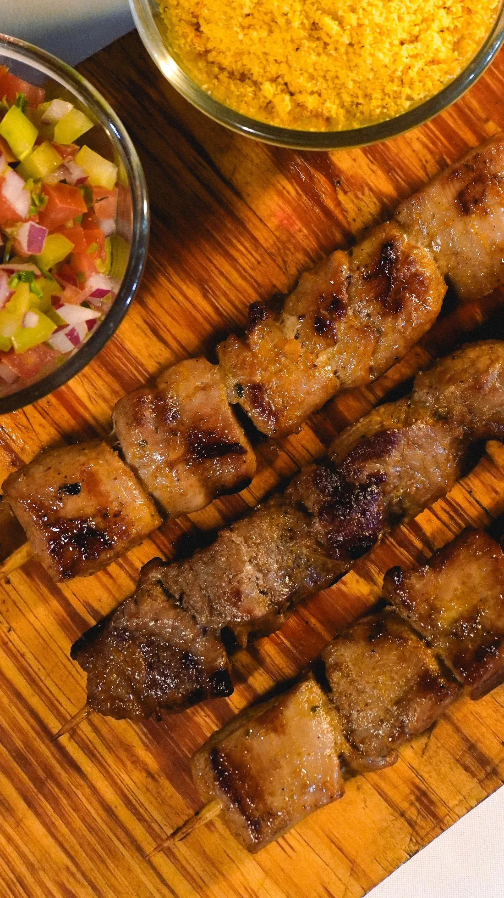
4 unidades
Cubos de alcatra temperados com alho e sal grosso, assados na grelha.
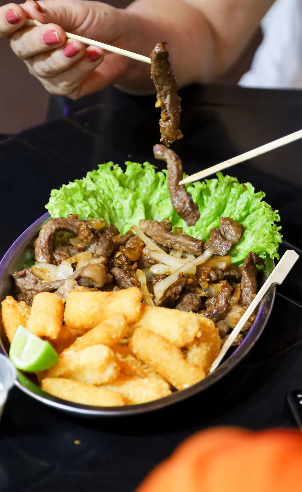
400 g
Carne de sol dessalgada na casa, salteada com cebola roxa e manteiga de garrafa.
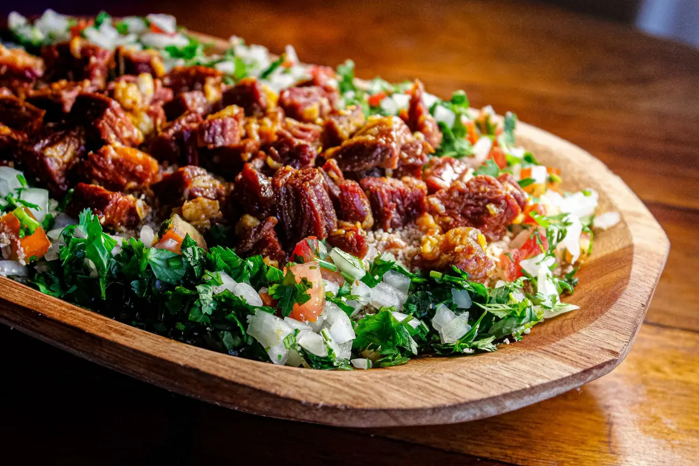
300 g
Barriga cozida devagar e pururucada, com limão-cravo para espremer.
Arroz, feijão, farofa, mandioca e batata em panelinha de ferro, para a mesa dividir.
9 opçõespanelinha
Arroz agulhinha refogado no alho, soltinho como o de casa.
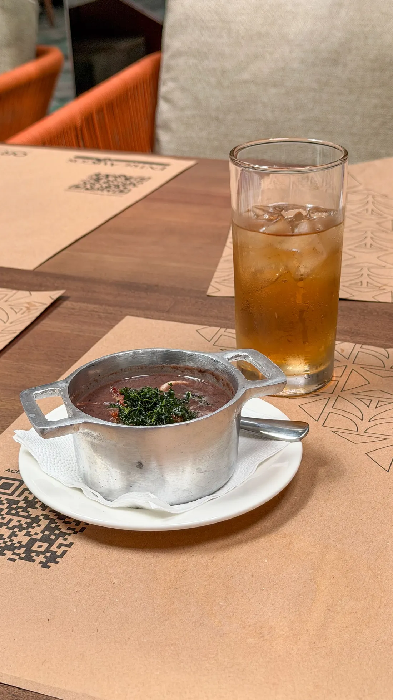
panelinha
Feijão carioca cozido na panela de pressão, com bacon, louro e cheiro-verde.
panelinhada casa
Feijão com farinha de mandioca, torresmo, linguiça, couve e ovo mexido.
cumbuca
Farinha de mandioca torrada na manteiga, de torresmo ou de banana-da-terra, à sua escolha.
500 gda casa
Mandioca cozida e frita na hora, crocante por fora, regada com manteiga de garrafa.
500 g
Batata cortada na casa, frita duas vezes e salpicada com sal e alecrim.
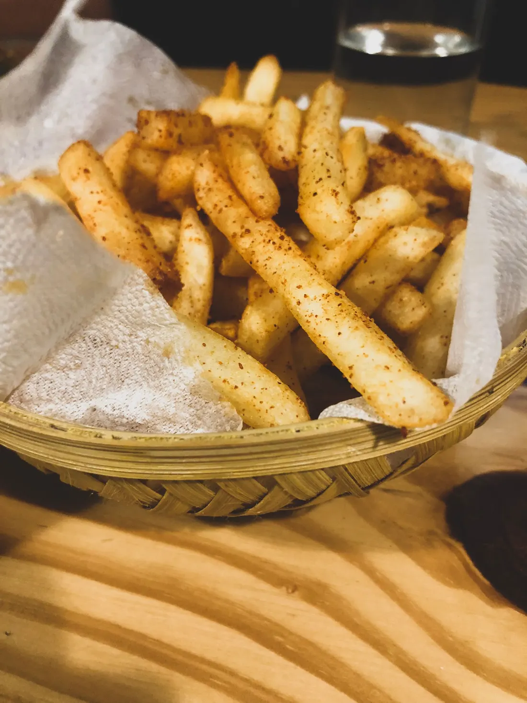
500 g
Batata com casca assada e depois frita, com alho confitado e páprica.
cumbuca
Couve cortada fininha na hora e passada rápido no alho.
cumbuca
Tomate, cebola, pimentão e cheiro-verde no vinagre de maçã.
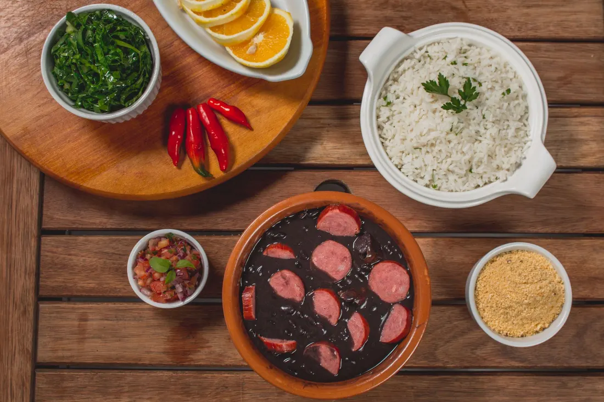
Combinações prontas de carne e porções, com preço fechado para dois ou quatro.
4 opçõespara 2da casa
Uma carne (picanha ou costela) com arroz, feijão caldo, farofa da casa e mandioca frita.
para 4
Duas carnes à escolha, arroz, tropeiro, feijão caldo, farofa, mandioca, batata e vinagrete.
para 3
Linguiça artesanal, torresmo, mandioca frita e batata rústica, com limão-cravo e pimenta da casa.
para 2
Sem carne: arroz, feijão caldo sem bacon, farofa de banana, mandioca, couve e vinagrete.
Caipirinhas de limão-cravo, clássicos com cachaça de alambique e criações do bar.
7 opções300 mlda casa
Cachaça prata de Salinas, limão-cravo do pé da varanda e rapadura no lugar do açúcar.
150 ml
Cachaça envelhecida em amburana, vermute tinto e bitter de casca de laranja.
400 ml
Gim mineiro, tônica, xarope de capim-santo e rodela de limão-siciliano.
300 ml
Cachaça ouro, maracujá azedo e mel de engenho batidos com gelo.
200 ml
Cachaça, licor de jabuticaba da casa, limão e espuma de clara.
dose de 50 ml
Vinte rótulos de Minas, em dose ou no trio para provar.
300 ml
Chopp claro gelado e cervejas artesanais de Belo Horizonte e Nova Lima.
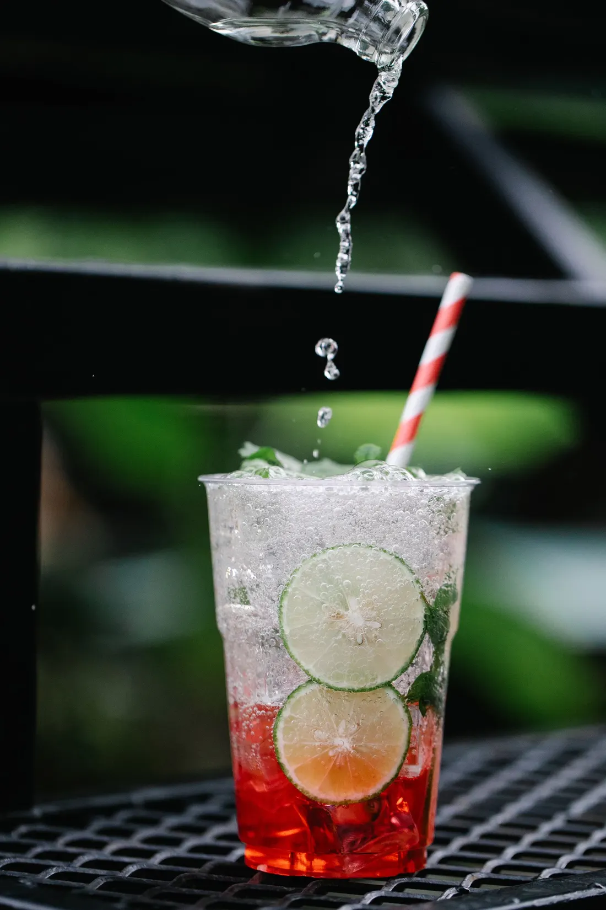
Sucos da horta, sodas da casa e limonadas, para quem dirige ou prefere assim.
4 opções400 ml
Limão com hortelã, abacaxi com capim-santo ou laranja com couve.
400 ml
Xarope de jabuticaba da casa, água com gás e limão.
400 ml
Limão batido com casca, leite condensado e gelo.
lata ou garrafa
Água com e sem gás, refrigerantes e chá-mate gelado da casa.
Prato kids, sobremesas da semana e a carta completa de cachaças estão no cardápio impresso. Pedir o cardápio completo no WhatsApp
Para reservar
Cada formato tem duração, preço por pessoa e quem recebe você. As condições de pagamento e cancelamento estão logo abaixo.
Mesa garantida com o cardápio inteiro. Diga a ocasião e a equipe prepara um recado na mesa.
Três carnes e todas as porções servidas na mesa, repondo à vontade por duas horas: arroz, feijão, tropeiro, farofa, mandioca e batata. Sobremesa inclusa.
Restrições alimentares com 48 horas de antecedência
Caipirinha de limão-cravo à vontade por duas horas, com uma porção de mandioca ou batata a cada quatro pessoas. Só para maiores de 18.
Mesa reservada para até 25 pessoas, bolo liberado sem taxa e um drink de cortesia para quem faz aniversário.
Salão ou varanda só para o seu grupo, de 25 a 80 pessoas, com cardápio de porções e drinks fechado com a equipe.
Restrições alimentares com 48 horas de antecedência
Sinal de 30% por Pix para confirmar
Quem faz o Taioba
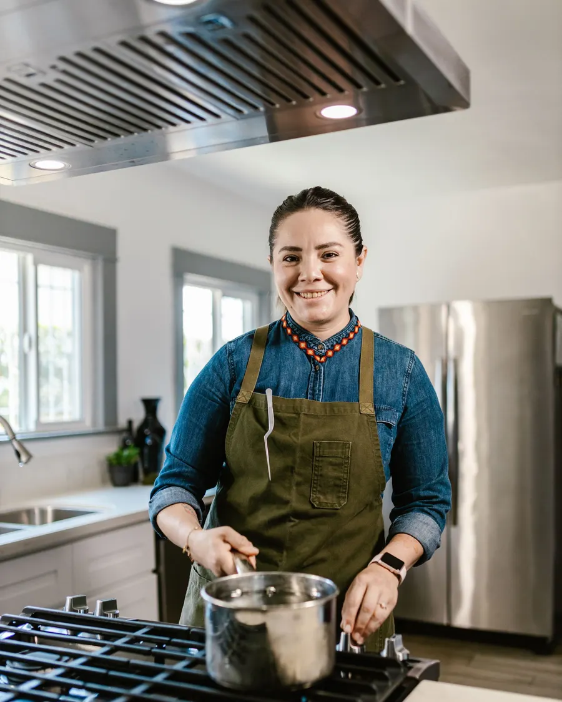
Chef e sócia
Cozinha mineira de panela e as porções da casa
Mestre da brasa
Carnes à parte, defumados e linguiça artesanal
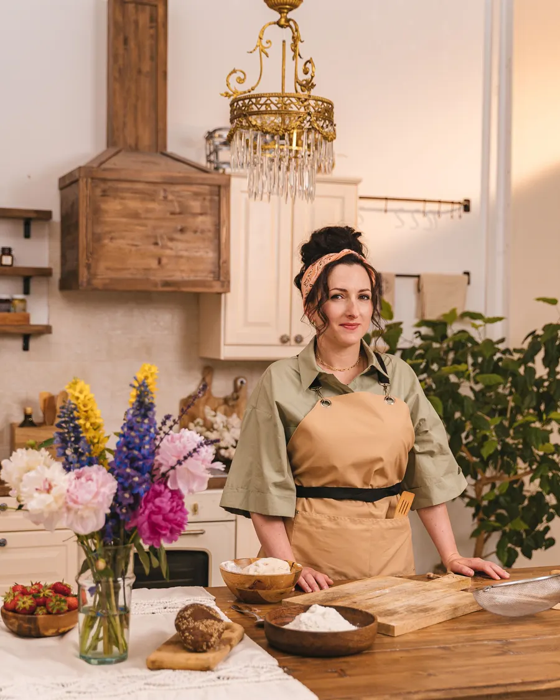
Chef de porções
Farofas, tropeiro, mandioca e os doces de tacho
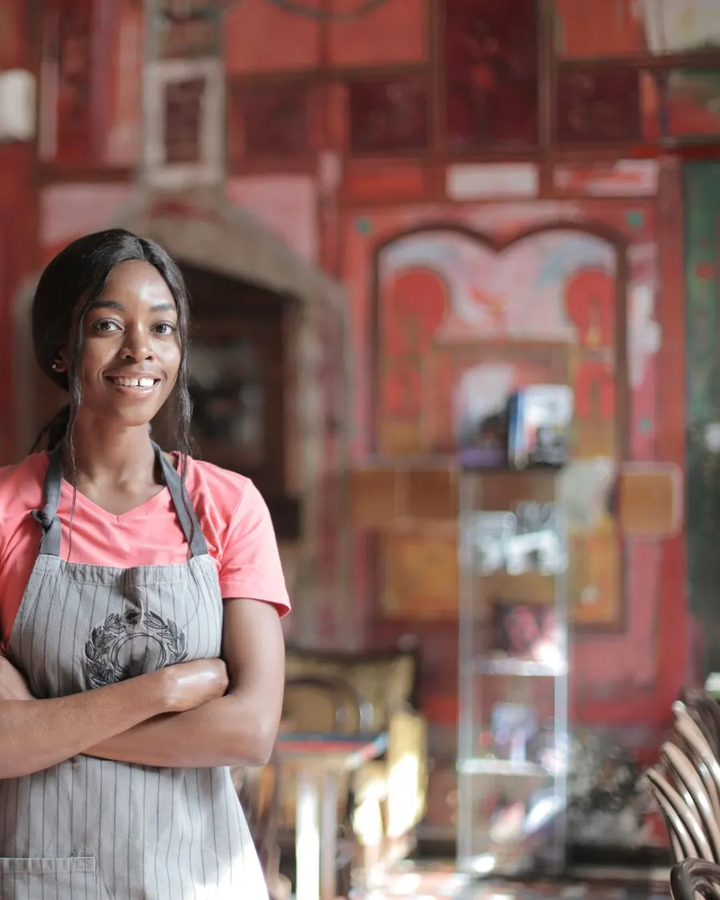
Chefe de bar
Caipirinhas, drinks com cachaça e a carta de alambiques
Maître e eventos
Recepção, aniversários e eventos privativos
Bar e cozinha mineira. Carne à parte, porção na mesa e caipirinha de limão-cravo. Santa Tereza, BH.
Siga o Taioba para ver a porção do dia, os drinks novos da Jéssica e a programação da semana.
Abrir o Instagram4,8de média em 2.340 avaliações no Google
A mandioca frita com manteiga de garrafa é a melhor de BH. Pedimos picanha à parte e montamos a mesa do nosso jeito. Atendimento do Rafael impecável.
Fui no happy hour de terça e a caipirinha de limão-cravo é outra coisa. Ambiente lindo na varanda, cheio de planta.
Tropeiro de sábado é obrigatório. Porção grande, bem servida, e a costela desmancha. Chegue cedo ou reserve.
Fiz meu aniversário na varanda com 22 pessoas. Liberaram o bolo, me deram um drink e a equipe cuidou de tudo.
A Mesa mineira completa vale cada centavo. Repõe tudo quente e as farofas são de comer rezando.
Confraternização da empresa com 50 pessoas. Porções chegando sem parar, drinks ótimos e preço justo.
Delivery
A mesma cozinha e a mesma brasa. Escolha o seu app, ou peça direto com a gente pelo WhatsApp e não pague taxa de app.
Acompanhe a entrega no mapa e pague pelo app.
 Food
Food
Cupons da semana no app. Busque por Taioba.
Pedido diretopelo WhatsApp, sai da nossa cozinha
Para levar
Tropeiro congelado, linguiça artesanal crua, farofa da casa e o kit caipirinha. Peça com 24 horas e retire no bar ou receba nos bairros perto.
Reservar online
Mesas de até 10 pessoas confirmam na hora. Grupos maiores e eventos recebem a confirmação pelo WhatsApp em até 2 horas. Segunda a casa fecha.
Políticas da casa
Regras curtas, para que todo mundo tenha a mesa que reservou e a porção que pediu.
Dúvidas
Não achou o que procurava? Mande uma mensagem pelo formulário abaixo ou pelo WhatsApp.
Não. As carnes vêm sozinhas na tábua, só com vinagrete e molho da casa. Você escolhe as porções (arroz, feijão, farofa, mandioca, batata) para a mesa dividir, ou pede uma das Mesas do Taioba, que já vêm montadas.
As panelinhas servem duas pessoas com folga. Para quatro pessoas, a gente costuma sugerir duas carnes e quatro ou cinco porções.
No almoço de terça a sexta, não. À noite, no fim de semana, no happy hour e na Mesa mineira completa, a reserva garante o lugar.
Tem a Mesa da horta e quase todas as porções em versão sem carne: arroz, mandioca, batata, couve, vinagrete e farofa de banana.
Claro. Temos cadeirão, um prato kids de arroz, feijão e frango desfiado (R$ 32) e, na Mesa mineira de domingo, criança até 10 anos paga metade.
Toda quinta, das 20h às 23h, com moda de viola e MPB na varanda. Couvert artístico de R$ 15 por pessoa só nesse dia.
Manobrista de quinta a domingo à noite (R$ 25) e vagas na rua. O bairro tem bastante vaga na rua no almoço.
Pode, sem taxa. A equipe guarda e serve na hora combinada. Quem faz aniversário ganha um drink da casa.
Contato
Orçamento de evento, encomenda grande, parceria ou só uma pergunta. A equipe responde no horário de funcionamento, em até um dia útil.